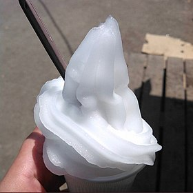

Créponné

Description
Le créponné, ou crepone, est un sorbet au citron qui constitue une des spécialités de la tradition culinaire algérienne.
Il est particulièrement apprécié pour ses qualités rafraîchissantes
Ingredients
- ¾ litre d'eau
- 1 verre de moutarde de sucre ( 15 cl à peu prêt )
- 2 verres de moutarde de jus de citron
- 2 blancs d'œufs
- 1 c à s d'eau de fleur d'oranger ( facultatif )
Steps
- Avant de récupérer les jus des citron, enlevez le zeste de deux d'entre eux
- Faites chauffer l'eau dans une casserole pour y dissoudre le sucre
- Laissez refroidir et ajoutez le zeste de citron, le citron et la fleur d'oranger
- Battez les blancs d'œufs en neige ferme et l'incorporez délicatement au liquide
- Versez le créponné dans une boite et placez-le au congélateur
- Toutes les 30 minutes, sortez-le. Battez l'ensemble au batteur électrique ou grattez à la fourchette et mélangez bien
- Avant de le servir mixez le créponné au mixeur pour lui donner la bonne texture (mixez quelques minutes)